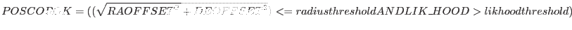
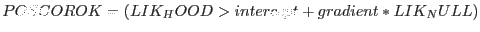

XMM-Newton Science Analysis System
evalcorr (evalcorr-0.7.1) [xmmsas_20170112_1337-16.0.0]
Description
The task performs one or more of several tests to evaluate the position correction as performed by eposcorr. These tests lead to a boolean value POSCOROK.
These are two test, 1XMM and 2XMM. Both rely on values written to the header of the source list by eposcorr. New attributes POSCOROK and SYSERRCC are written to the output as keywords. Options also exist to write additional attributes indicating the result of each test and intermediate values.
evalcorr performs a simple evaluation of eposcorr amended source lists. If the correlation is determined to be bad then the RA, DEC , LII and BII columns are used to overwrite the RA_CORR , DEC_CORR , LII_CORR and BII_CORR columns respectively.
The 1XMM evaluation is:

The 2XMM evaluation is:

XMM-Newton SOC/SSC -- 2017-01-12